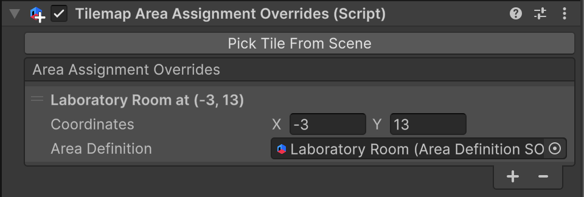
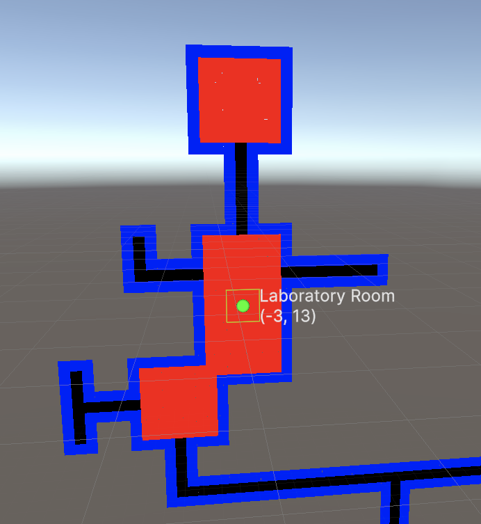

Tilemap Area Assignment Overrides
The TilemapAreaAssignmentOverrides component is used when your Generation Source is set to Tilemap. It lets you assign AreaDefinitions to rooms or corridors by marking them on your source Tilemap in the Scene View.
This component must be on the same object as your MoraMapGen component in order to be applied.
Add Area Assignment Overrides

The simplest way to add an override entry to the list is to:
- Click the
Pick Tile From Scenebutton. - Click on a tile in the Scene View. It will add a new entry to the list using the coordinates of the tile you selected.
- Assign the
AreaDefinitionSOasset that you want to use for the room or corridor at your selected coordinates.
Alternatively if you click the + button to add an entry, you can just edit the coordinates and you'll see it's position updated in the scene view.
